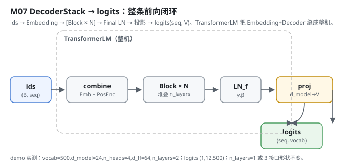
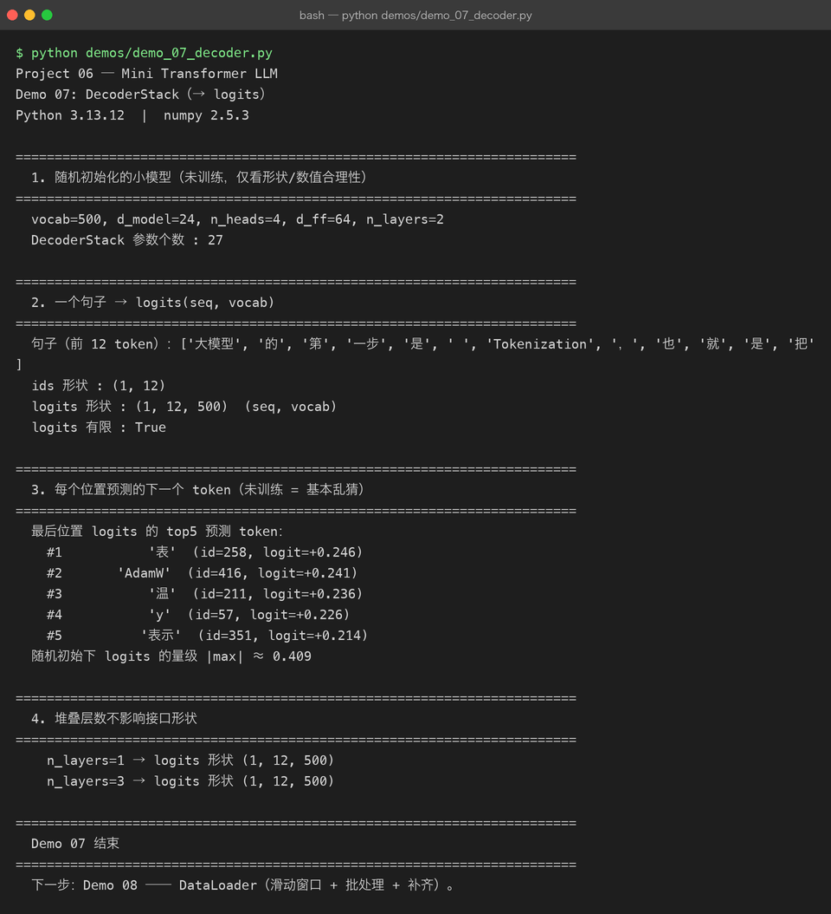

Milestone 07 — DecoderStack：把 N 层堆起来，输出 logits
Milestone 03–06 已经把「单个 Block」写好了。这一层把它们堆成整条前向链路：Embedding 进来，过 N 个 Block，最后接一个最终 LayerNorm 和输出投影，把每个位置的隐藏向量变成词表上的 logits。到这里，从 id 到 logits 的整条路就闭环了 —— 下一步交给交叉熵算损失。
在 Project 05 里 model(_messages) → text 是个黑盒；这里 ids → Embedding → [Block × N] → LN → proj → logits(seq, V) 每一步的形状我都亲手钉死。
1. What / Why：堆叠层数为什么不影响接口
DecoderStack 把 N 个 Block 串起来。关键性质：不论堆几层，输入 (B, seq, d_model)、输出还是 (B, seq, d_model) —— 每个 Block 都保持维度不变（残差保证的）。所以「换层数」只改容量，不改接口，训练侧和推理侧都不用动。最后一层投影 (d_model → vocab) 才把维度掰到词表大小。
TransformerLM 是把 Embedding + DecoderStack 缝在一起的整机，训练和推理都直接用它（Milestone 09/10 直接用）。
2. Design：N 层 + 最终 LN + 投影
src/model/decoder.py：
DecoderStack.__init__：self.blocks = [TransformerBlock(...) for _ in range(n_layers)]、一个_FinalLayerNorm、self.proj = Parameter(np.random.randn(d_model, vocab_size) * 0.02)。forward：h = x; for block in blocks: h = block(h, mask); h = ln_f(h); return linear(h, proj)。TransformerLM：token_emb + pos_enc + decoder三件套；forward(ids)自动按序列长生成因果掩码，返回logits (B, seq, vocab)。

3. Real-run evidence（来自 demos/out/demo_07_decoder.txt）
真实环境：Python 3.13.12 | numpy 2.5.3。注意这是随机初始化、未训练的模型，只看形状与数值合理性。
vocab=500, d_model=24, n_heads=4, d_ff=64, n_layers=2
DecoderStack 参数个数 : 27
句子（前 12 token）：['大模型', '的', '第', '一步', '是', ' ', 'Tokenization', '，', '也', '就', '是', '把']
ids 形状 : (1, 12)
logits 形状 : (1, 12, 500) (seq, vocab)
logits 有限 : True未训练时每个位置的预测基本是乱猜，最后一位 top5：
#1 '表' (id=258, logit=+0.246)
#2 'AdamW' (id=416, logit=+0.241)
#3 '温' (id=211, logit=+0.236)
#4 'y' (id=57, logit=+0.226)
#5 '表示' (id=351, logit=+0.214)
随机初始下 logits 的量级 |max| ≈ 0.409最重要的是「堆叠层数不影响接口形状」被验证：
n_layers=1 → logits 形状 (1, 12, 500)
n_layers=3 → logits 形状 (1, 12, 500)|max| ≈ 0.409 也印证了小初始化（0.02）按预期生效：随机初始的 logits 离「均匀」不远，没一上来就饱和。

4. Bugs / lessons
本 milestone demo 没有暴露真实运行 bug。一个值得记的设计点：TransformerLM.forward 在 mask is None 时自动按当前 seq_len 生成因果掩码（causal_mask(seq_len)），并校验 seq_len ≤ max_len。这条把「模型自己管掩码」收口在一处，避免训练/推理两边各写一份掩码逻辑、对齐出错（Milestone 02 强调过「特殊 token 顺序写死、两边不许各写一套」，掩码同理）。
5. Conclusion
- DecoderStack =
[Block × N] → FinalLN → 投影(d_model→V)，输出(seq, vocab)的 logits。 - 因为 Block 维度不变，层数只改容量、不改接口 ——
n_layers=1和3输出形状相同。 TransformerLM把 Embedding+Decoder 缝成整机，并统一负责因果掩码，训练/推理共用一份逻辑。- 随机初始 logits
|max|≈0.409，说明小初始化按预期生效，没饱和。
6. Code map
| 文件 | 职责 |
|---|---|
src/model/decoder.py | DecoderStack（N 层 Block + FinalLN + proj）、TransformerLM（Embedding+PosEnc+Decoder 整机，统一管掩码） |
src/model/block.py | 复用的 TransformerBlock |
src/model/embedding.py | 复用的 TokenEmbedding / PositionalEncoding / combine |
demos/demo_07_decoder.py | 4 节演示：构造 / 前向 / 未训练预测 / 层数无关性，输出落 demos/out/demo_07_decoder.txt |
assets/decoder.svg | 本章前向闭环图 |
7. Version line
v0.5 → v0.6，DecoderStack + TransformerLM 整机落地（id→logits 全链路闭环，层数无关接口验证），演示真实跑通并核对 logits 形状/未训练预测，配图 1 张手写 SVG + 1 张真实终端截图。